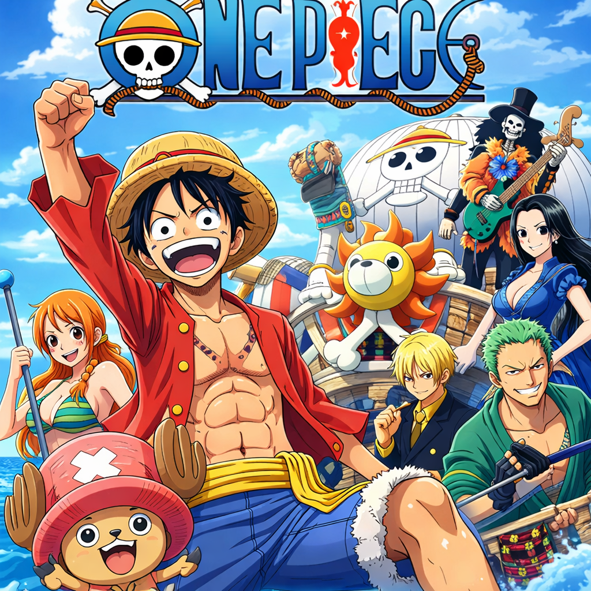
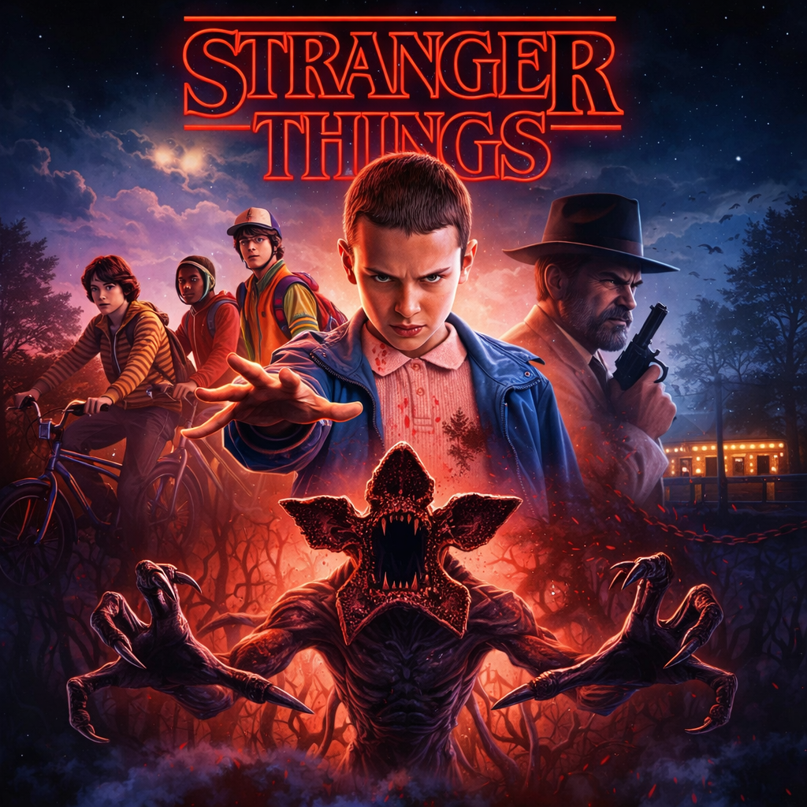
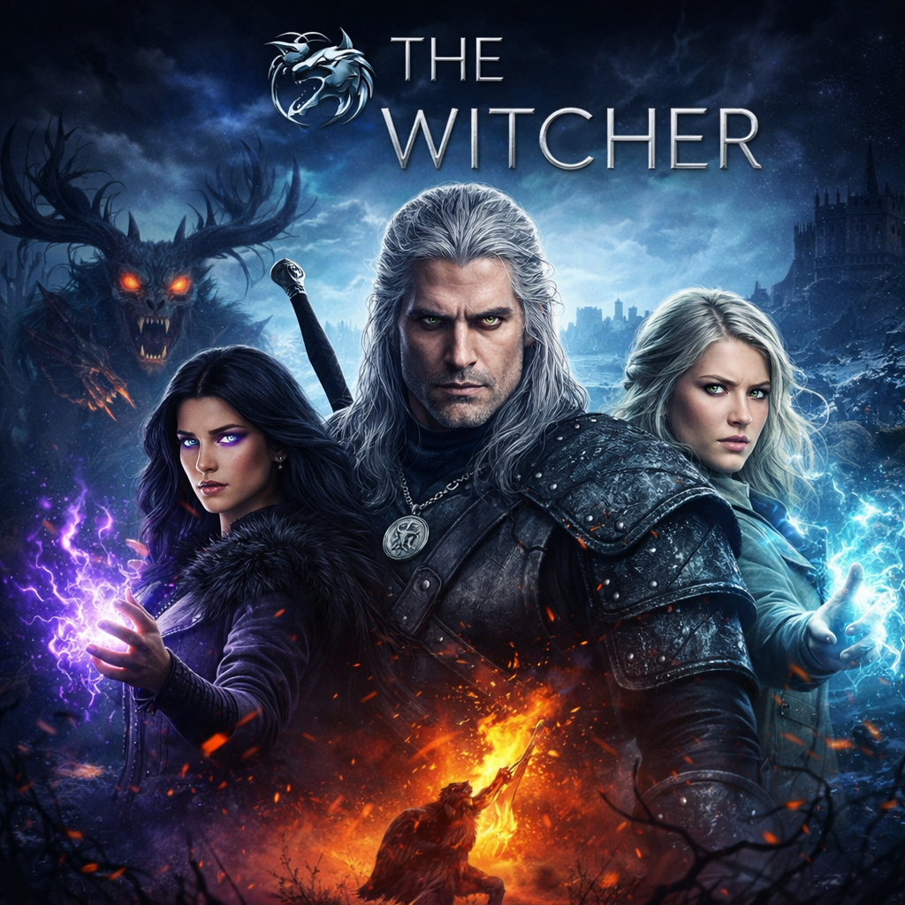

Ezeket neked is látnod kell!
A One Piece egy ikonikus japán anime és manga sorozat, amelyet Eiichiro Oda alkotott. A történet középpontjában Monkey D. Luffy áll, egy különleges képességekkel rendelkező fiatal kalóz, aki arról álmodik, hogy megtalálja a legendás kincset, a „One Piece”-t, és ezzel ő legyen a Kalózkirály.

A sorozat egy hatalmas, részletesen kidolgozott világban játszódik, ahol tengerek, szigetek és különféle kultúrák váltják egymást. Luffy és legénysége, a Szalmakalapos kalózok, izgalmas kalandok során barátokra lelnek, ellenségekkel küzdenek meg, és folyamatosan fejlődnek – nemcsak erőben, hanem emberileg is.
A One Piece különlegessége, hogy egyszerre kínál akciót, humort és érzelmi mélységet. A történet fontos témái közé tartozik a barátság, a szabadság, az álmok követése és az igazság keresése. Minden karakternek saját múltja és célja van, ami még gazdagabbá teszi a történetet.
Ez a sorozat nemcsak szórakoztató, hanem inspiráló is: arra ösztönöz, hogy merjünk nagyot álmodni, és soha ne adjuk fel, még a legnehezebb helyzetekben sem.
Tovább a One Piece IMDb oldalára
A Stranger Things egy izgalmas és nosztalgikus hangulatú sci-fi–horror sorozat, amelyet a Duffer Brothers alkottak. A történet az 1980-as években, az amerikai Hawkins kisvárosában játszódik, ahol különös és természetfeletti események kezdik megzavarni a hétköznapi életet.

A történet középpontjában egy baráti társaság áll, akik egyikük rejtélyes eltűnése után egy titokzatos kormánykísérlet és egy párhuzamos dimenzió, az úgynevezett „Upside Down” nyomaira bukkannak. Különösen fontos szerepet kap Eleven, egy különleges képességekkel rendelkező lány, aki kulcsfontosságú a rejtély megoldásában.
A Stranger Things erőssége a hangulata: tökéletesen idézi meg a ’80-as évek világát zenével, divattal és filmes utalásokkal. A sorozat ügyesen ötvözi a feszültséget, a rejtélyt és az érzelmi történetvezetést, miközben erős karakterkapcsolatokra épít.
Ez a sorozat nemcsak izgalmas és ijesztő, hanem mélyen emberi is: a barátság, a bátorság és az összetartás erejét mutatja meg egy sötét és veszélyes világban.
Tovább a Stranger Things IMDb oldalára
A The Witcher egy sötét hangulatú fantasy sorozat, amely Netflix gyártásában készült, és Andrzej Sapkowski könyvsorozatán alapul. A történet egy kegyetlen és morálisan összetett világban játszódik, ahol emberek, szörnyek és mágikus lények élnek egymás mellett.

A sorozat középpontjában Geralt of Rivia áll, egy mutációk révén megerősített szörnyvadász, aki pénzért irtja a veszélyes lényeket. Bár kívülállóként él, gyakran kerül olyan helyzetekbe, ahol erkölcsi döntéseket kell hoznia, és rájön, hogy az emberek néha szörnyűbbek, mint a szörnyek.
Mellette kiemelt szerepet kap Yennefer of Vengerberg, egy hatalmas erejű varázslónő, valamint Ciri, egy különleges sorssal rendelkező hercegnő, akinek képességei kulcsfontosságúak a világ jövője szempontjából.
A The Witcher erőssége a komplex történetvezetés, a politikai intrikák és a morálisan szürke karakterek. A sorozat nem fekete-fehér világot mutat be: itt minden döntésnek ára van, és a jó és rossz határa gyakran elmosódik.
Ez a sorozat tökéletes választás azoknak, akik szeretik a komor hangulatú fantasy világokat, a mély karakterdrámát és az akciódús, mégis elgondolkodtató történeteket.
Tovább a The Witcher IMDb oldalára
| Sorozat | Kiadás éve | Műfaj | Fut még? |
|---|---|---|---|
| One Piece | 1999 | Anime, kaland, akció | Igen |
| Stranger Things | 2016 | Sci-fi, horror | Nem |
| The Witcher | 2019 | Fantasy, akció | Igen |